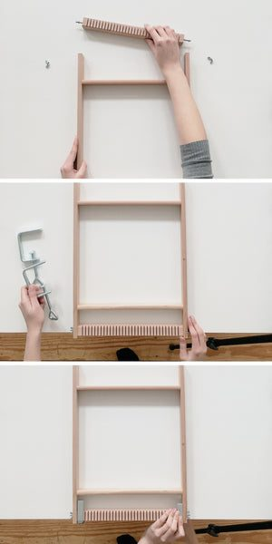
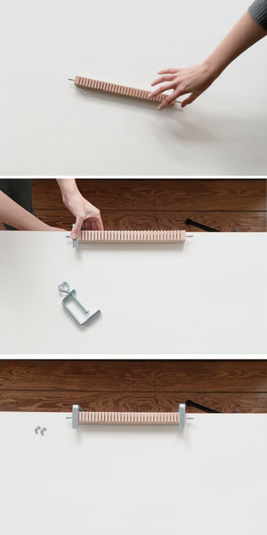
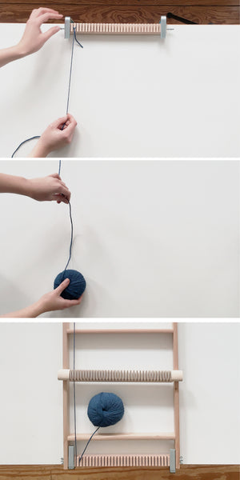
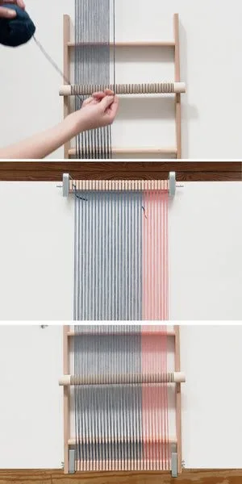
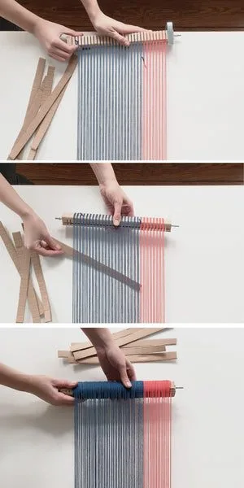
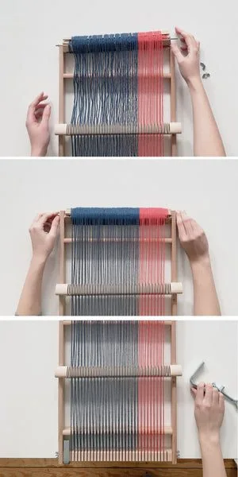
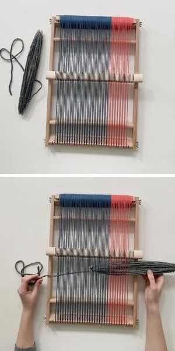
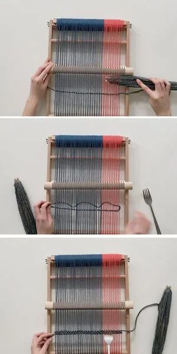
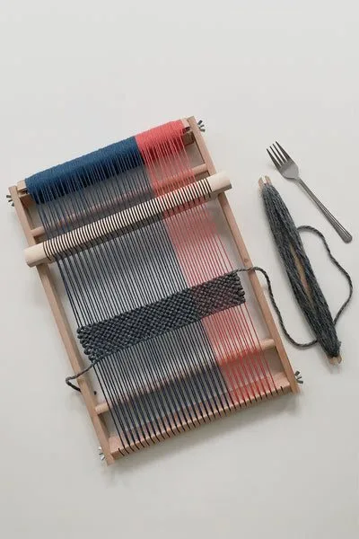
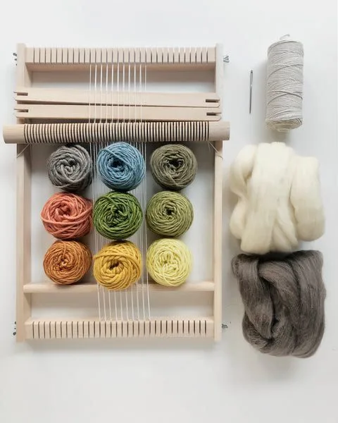

It's not true that you need a big floor loom to weave longer pieces. There is a special type of frame loom that you can dress with long warps. All you need is a detachable warping beam and four metal clamps. In this tutorial I'll walk you through the process of preparing a warp for a scarf on that kind of loom.

Tools
- loom
- metal clamps
- 5–10 cardboard strips
- warp and weft
- long table
Apart from the loom, you will need four metal clamps to secure it while warping. You can find them in hardware stores. Additionally, prepare 5–10 cardboard strips in the length and width of the warping beam.
You will also need warp, which is all vertical threads you will tension between top and bottom beams. Usually I recommend either cotton or linen, but for a scarf I always choose softer yarns like wool. Make sure your warp is strong and won't break when tensioned.
You will work on a long table or another long and sturdy piece of wood that you can secure your loom to. The longer the table, the longer the warp. I am working on a 2 m long table for this tutorial, so my scarf will be 2 m long (including the fringe).
Later, for weaving, you will also need weft (horizontal threads — I would choose wool or other soft yarns), shuttle sticks, and a tapestry needle. I won't cover the details of the weaving process in this post, as it's identical to weaving shorter pieces.

Detaching the top beam and securing the loom
Unscrew the bolts on both sides of your top warping beam and pull gently. Detach the beam from the rest of your loom, and put the screws in a safe place so they don't get lost — you will need them later. Move the loom to the very edge of the table and use two of the four metal clamps to secure it. The loom shouldn't be able to move while you warp it. It has to stay in place in order to achieve evenly tensioned warp.
You can put a piece of soft fabric between the clamps and the table to avoid pressing marks. The clamps can be rough on wooden surfaces, so make sure they don't damage your table top.

Attaching the top beam to the table
Once the loom is secured, move the loose top beam to the opposite side of your table top. Make sure the beam lies in a direct perpendicular line to the rest of the loom. What you want to achieve is all warp threads of exactly the same length, so both beams have to be secured parallel to each other, with warp threads running exactly perpendicular.

Attaching the warp
Make a loop with your fingers and attach the thread to one of the “teeth” on the top beam. Make sure the knot is tightened properly and doesn't move when you pull the thread. A loose knot will make it difficult to keep the tension even, and that's the most important part of warping.
Pull the thread all the way to the opposite side of the table and wrap it around a corresponding tooth on the bottom beam. The thread will go through the heddle bar, hook around the bottom tooth, and go back to the top bar through the next groove on the heddle bar.

Warping
Keep warping until the loom is dressed. You can use different colors of yarn to achieve a more interesting pattern. If you need additional help with warping, go to my warping post, where I explain in detail how it's done. It's an easy-to-follow, step-by-step instruction for beginners.

Winding the warp
Now that your warp is stretched, you can remove the clamps holding the top beam in place. The bottom part of the loom still has to stay secured at this point, so only remove the top beam. Carefully unscrew the clamps and start winding the warp onto the top beam, winding the beam under the warp threads. Keep the warp evenly tensioned by pulling the beam toward you.
Important: use the cardboard strips you prepared beforehand and put them between the warp and the beam as you go. They will separate the next layers of warp and ensure that the single threads don't fall into the grooves on the beam, which could mess up your tension.

Adjusting the tension
Your warp is neatly wound onto the beam. Now you can find the screws you kept before and attach the top beam back to your loom. Wind the beam some more to tension the warp and, voilà, you can remove the clamps holding the loom to the table and start weaving your piece.

Weaving — best practices
Having a loom with a heddle bar speeds up the process significantly. It creates an opening between warp threads. Alternating threads are placed in alternating grooves of the heddle bar. Every time you turn the bar, every second thread will be lifted, so you can easily place your weft between your warp threads. Start weaving your scarf. At this point you can already add tassels.

Unwinding the warp
Work with your weft and the heddle bar to weave the very first section of your scarf. Don't beat the threads too tightly — you want your scarf to be woven rather loosely, otherwise it will become too stiff. When you have woven enough, you can start moving up your warp. Unscrew both top and bottom beams slightly, so that they can turn but are not completely loose. Turn the bottom beam so that you pull the warp. The top beam will start unwinding, releasing more warp to weave. Once you have enough fresh warp to resume weaving, secure the beams with the bolts.

Enjoy weaving
Keep releasing more warp and pushing the shuttle through the weft. Once you have woven your scarf, finish off with tassels.
